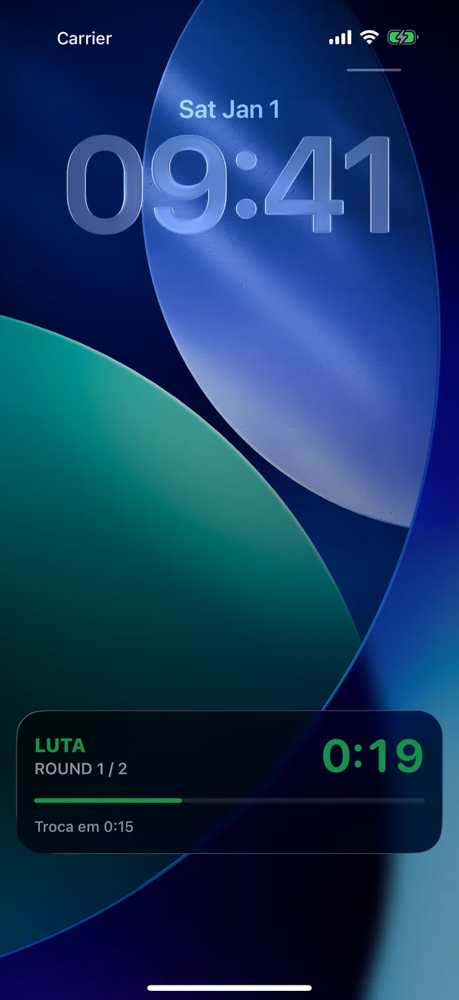
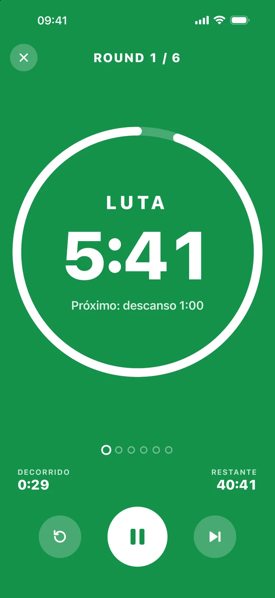
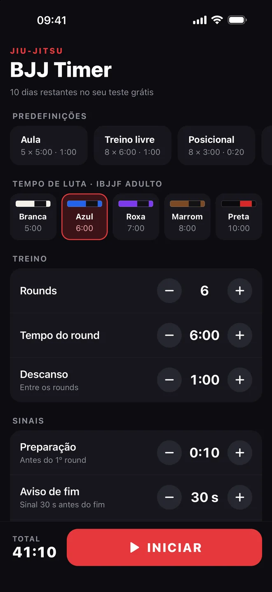

JIU-JITSU
O cronômetro de rounds feito para o tatame.
Configure os rounds, o descanso e os drills uma vez. O sino, o aviso de fim e as cores em tela cheia fazem o resto. Comece aqui mesmo, grátis.
Abrir o timer grátisTeste grátis de 10 dias · compra única · sem assinatura
Experimente: o timer funciona aqui mesmo.
JIU-JITSU
BJJ Timer
PREDEFINIÇÕES
TEMPO DE LUTA · IBJJF ADULTO
TREINO
SINAIS
No navegador, mantenha esta aba aberta e a tela ligada. Celular na mochila? O app continua contando na tela bloqueada.
Cores que dá para ver do outro lado da academia
Azul para se preparar, verde para lutar, amarelo nos últimos segundos, vermelho para descansar. A tela mostra onde você está antes mesmo do sino.
PREPARE-SE
0:10
Próximo: round 1
LUTA
5:41
Próximo: descanso 1:00
ÚLTIMOS SEGUNDOS
0:08
Próximo: descanso 1:00
DESCANSO
0:45
Próximo: round 2
O APP
O celular fica na mochila.
O app BJJ Timer continua rodando com o celular bloqueado, com a contagem na Tela Bloqueada, na Dynamic Island e nas notificações do Android.
- Contagem na tela bloqueada no iPhone e no Android
- O sino toca no modo silencioso e por cima da sua música
- Sinal de troca no meio do round para treinar os dois lados
- Predefinições para aula, treino livre, posicional, shark tank, pré-campeonato e ADCC
- Sem conta, sem anúncios, sem rastreamento
Teste grátis de 10 dias · compra única · sem assinatura


Tempo de luta IBJJF por faixa
Tempos de luta adulto pelas regras da IBJJF. Toque numa faixa no timer para usar esse tempo de round.
| Faixa | Tempo de luta |
|---|---|
| Branca | 5:00 |
| Azul | 6:00 |
| Roxa | 7:00 |
| Marrom | 8:00 |
| Preta | 10:00 |

Tudo o que um timer de tatame precisa
Sinal que dá para ouvir
Sino no início, sino triplo no fim, aviso antes de acabar o tempo e bipes de contagem.
Troca no meio
Um sinal no meio do round para trocar de lado, de posição ou de parceiro.
Predefinições
Aula, treino livre, posicional, drills, shark tank, pré-campeonato e ADCC, a um toque.
Números enormes
Cores em tela cheia, anel de progresso e contador de rounds que dá para ler da parede.
Compartilhe o seu treino
Mande a sua configuração para a academia em um link. Ele abre com os mesmos rounds e descanso.
Privacidade
Sem conta, sem anúncios, sem rastreamento. As configurações ficam no seu aparelho.
Perguntas
Quanto tempo dura uma luta de jiu-jitsu?
Pelas regras da IBJJF, as lutas adulto duram 5 minutos na faixa branca, 6 na azul, 7 na roxa, 8 na marrom e 10 na preta.
O timer é grátis?
O timer no navegador é grátis. O app tem teste grátis de 10 dias; depois, uma compra única desbloqueia para sempre. Não há assinatura.
Ele continua com o celular bloqueado?
O app continua: a contagem fica na tela bloqueada e o sino continua tocando. No navegador, a aba precisa ficar aberta e a tela ligada.
Dá para usar em drills e posicional?
Sim. Use as predefinições Drills ou Posicional e ative a troca no meio para receber um sinal para trocar de lado ou de posição.
Posso mandar o meu timer para a academia?
Sim. Toque em Compartilhar e envie o link. Ele abre o timer com os mesmos rounds, tempo de round e descanso.
Treine com o BJJ Timer
Grátis por 10 dias, depois uma compra única. Seus rounds na tela bloqueada.